商品属性商品本身的可见属性与购买基础决策点。
适用季节p0标签值：四季通用 / 夏季凉感 / 秋冬保暖 / 孕产 / 少女期判断：厚薄、凉感/保暖面料和文案季节词。
功能属性p0标签值：无痕 / 舒适贴合 / 支撑聚拢 / 收腹提臀 / 透气抗菌 / 吸汗 / 保暖 / 防磨腿判断：贴身试穿、弹力/面料特写及字幕。
材质属性p0标签值：纯棉 / 莫代尔 / 冰丝 / 蕾丝 / 桑蚕丝 / 乳胶 / 锦纶氨纶判断：材质特写、吊牌或口播材质词。
舒适、支撑与贴身功能表达 · 标签树、效果分析与 Top 素材逐帧创意拆解。
内容形式、画面客观要素使用统一核心标签；商品属性、卖点表达、情绪营销已按 内衣 的实际类目与素材特点调整枚举值。
视频结构、出镜角色、拍摄场景为核心标签，使用更深的蓝色卡片强调。
| 标签 | 消耗占比 | CTR | 3秒完播 | CVR |
|---|---|---|---|---|
| 真人口播 | 91.7% | 2.01% | 34.1% | 8.9% |
| 沉浸式产品展示 | 5.0% | 1.62% | 45.3% | 12.55% |
| 多人剧情 | 3.3% | 3.14% | 52.6% | 8.83% |
| 直播切片 | — | — | — | — |
| AI数字人口播 | — | — | — | — |
| 标签 | 消耗占比 | CTR | 3秒完播 | CVR |
|---|---|---|---|---|
| 单人女 | 91.7% | 2.01% | 34.1% | 8.9% |
| 无人出镜 | 5.0% | 1.62% | 45.3% | 12.55% |
| 多人对话 | 3.3% | 3.14% | 52.6% | 8.83% |
| 标签 | 消耗占比 | CTR | 3秒完播 | CVR |
|---|---|---|---|---|
| 居家室内 | 96.7% | 1.99% | 34.6% | 9.09% |
| 商场门店 | 2.4% | 3.86% | 60.9% | 10.46% |
| 工厂车间 | 0.9% | 1.24% | 30.9% | 4.55% |
| 标签 | 消耗占比 | CTR | 3秒完播 | CVR |
|---|---|---|---|---|
| 功能实测 | 91.4% | 2.06% | 35.9% | 9.02% |
| 信任背书 | 7.2% | 1.47% | 28.5% | 10.02% |
| 场景痛点 | 0.9% | 2.63% | 32.0% | 8.67% |
| 颜值种草 | 0.5% | 2.9% | 24.8% | 7.58% |
| 标签 | 消耗占比 | CTR | 3秒完播 | CVR |
|---|---|---|---|---|
| 舒适贴合 | 75.4% | 1.95% | 33.9% | 8.65% |
| 核心卖点展示 | 13.9% | 2.69% | 44.9% | 10.1% |
| 亲肤安全 | 7.2% | 1.47% | 28.5% | 10.02% |
| 吸汗透气 | 2.0% | 1.7% | 48.0% | 15.03% |
| 收腹提臀 | 0.9% | 2.63% | 32.0% | 8.67% |
| 亲肤舒适 | 0.5% | 2.9% | 24.8% | 7.58% |
| 标签 | 消耗占比 | CTR | 3秒完播 | CVR |
|---|---|---|---|---|
| 身材焦虑自信种草 | 76.3% | 1.96% | 33.8% | 8.65% |
| 结果导向 | 13.9% | 2.69% | 44.9% | 10.1% |
| 家长关怀 | 7.2% | 1.47% | 28.5% | 10.02% |
| 促销紧迫感 | 2.0% | 1.7% | 48.0% | 15.03% |
| 舒适治愈 | 0.5% | 2.9% | 24.8% | 7.58% |
| # | 细分类目 | 素材数 | 消耗占比 | CTR | 3秒完播 | CVR |
|---|---|---|---|---|---|---|
| 1 | 文胸/乳贴/内裤 | 352 | 75.4% | 1.95% | 33.9% | 8.65% |
| 2 | 儿童内衣裤袜 | 35 | 7.2% | 1.47% | 28.5% | 10.02% |
| 3 | 健身/运动服装 | 21 | 3.5% | 1.74% | 33.4% | 8.35% |
| 4 | 通用骑行装备 | 8 | 3.4% | 3.58% | 56.1% | 10.12% |
| 5 | 袜子 | 12 | 2.0% | 1.7% | 48.0% | 15.03% |
| 6 | 塑身衣/裤 | 9 | 0.9% | 2.63% | 32.0% | 8.67% |
| 7 | 婴童尿裤/尿垫 | 3 | 0.7% | 1.64% | 28.6% | 12.11% |
| 8 | 其他内衣裤袜 | 4 | 0.7% | 3.16% | 54.2% | 15.89% |
| 9 | 睡衣/家居服 | 5 | 0.5% | 2.9% | 24.8% | 7.58% |
按消耗排序；每条均展示视频、6 个关键帧、叙事路径、Learning 与创意标签，布局与箱包鞋靴深度站保持一致。
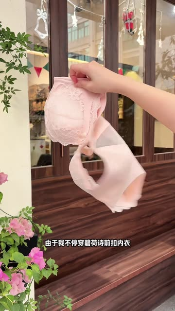
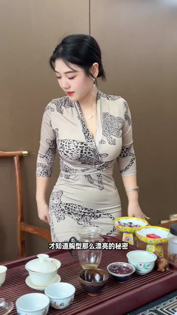
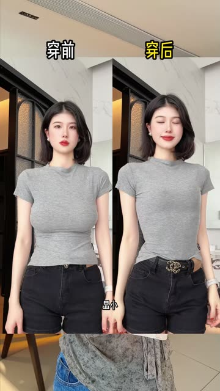
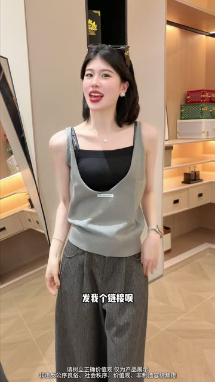
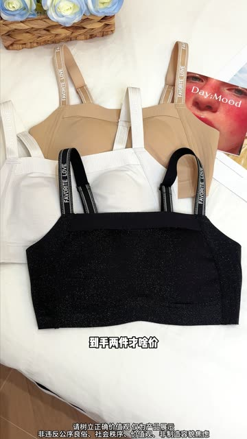
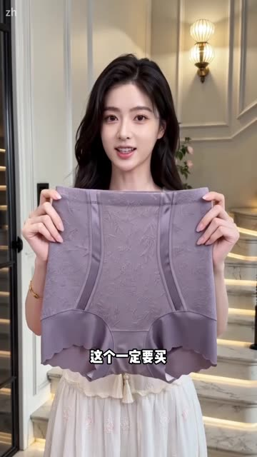
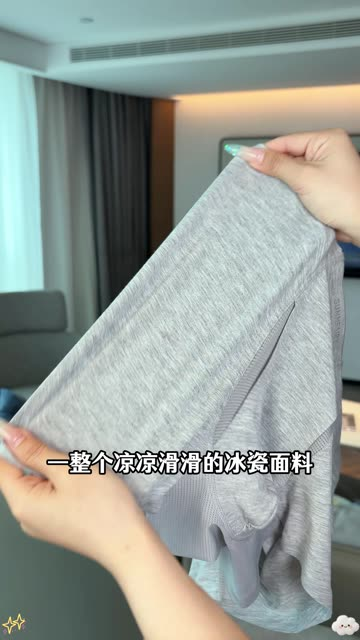
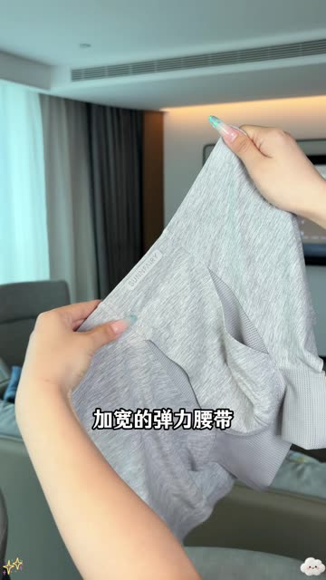
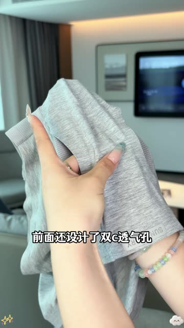
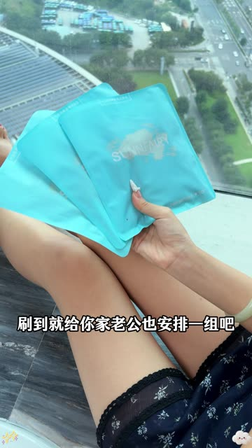
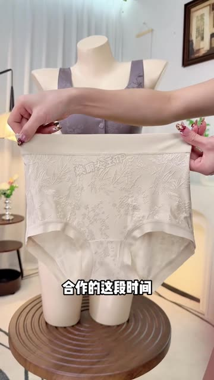
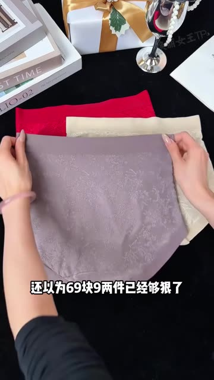
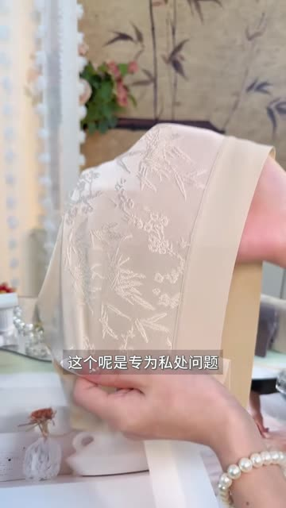
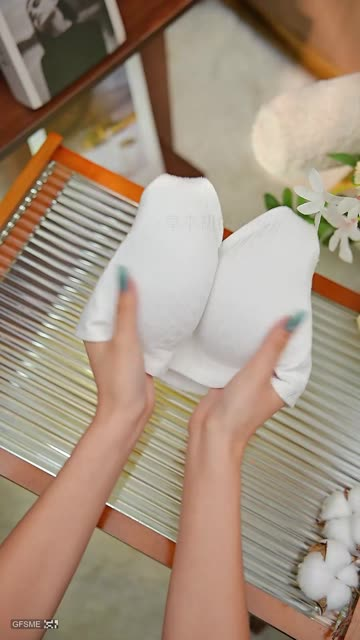
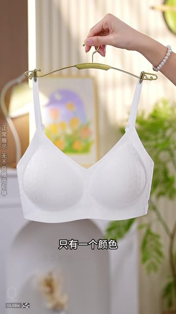
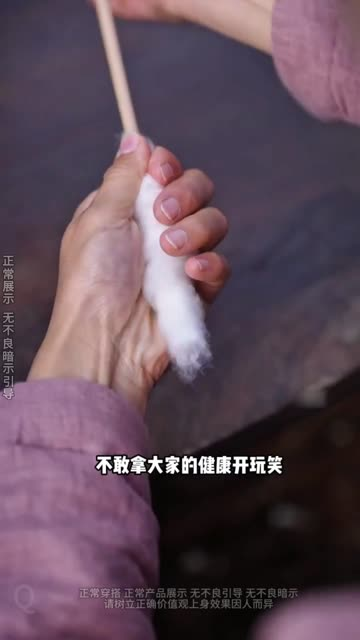
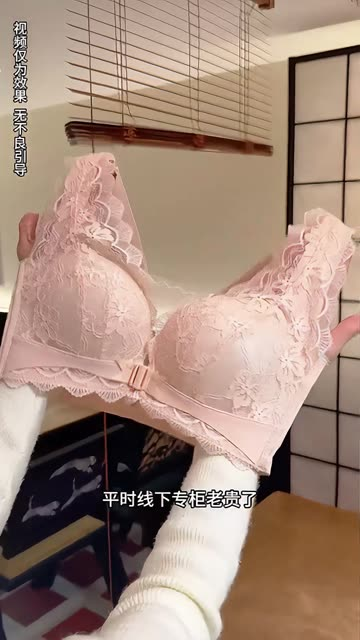
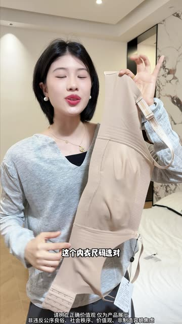
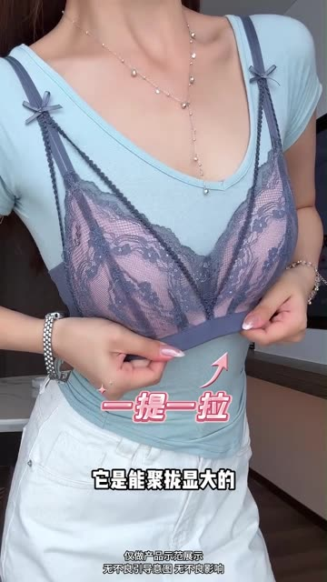
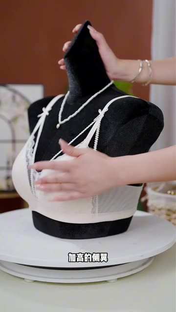
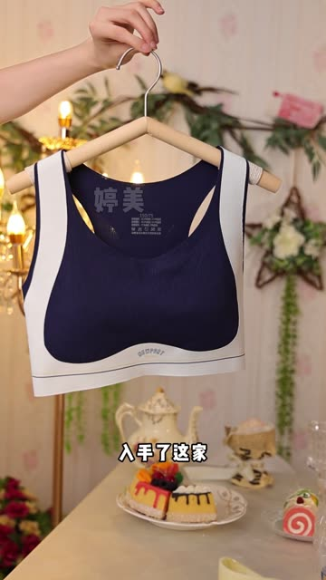
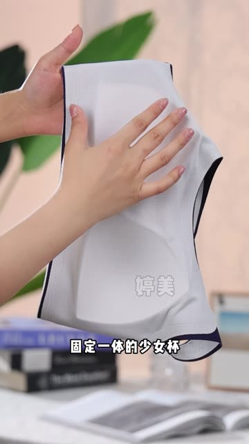
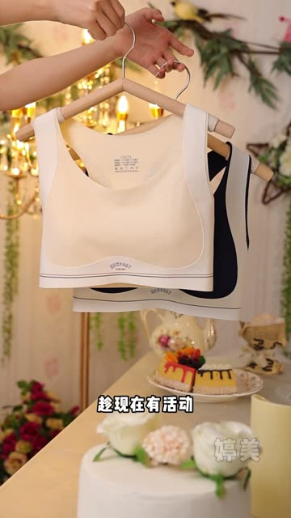
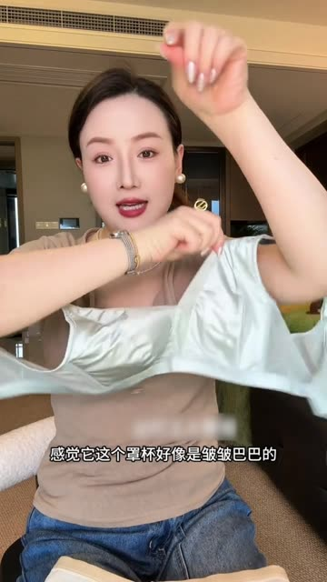
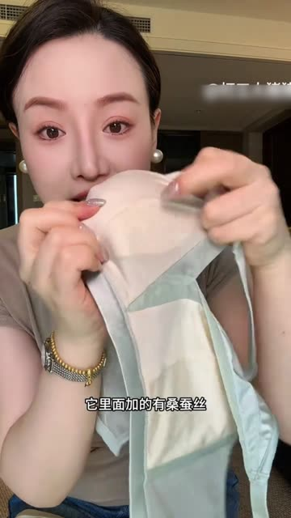
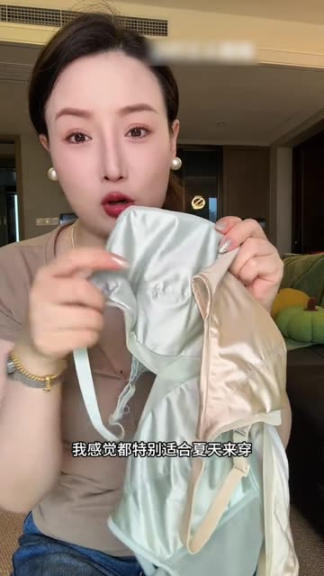
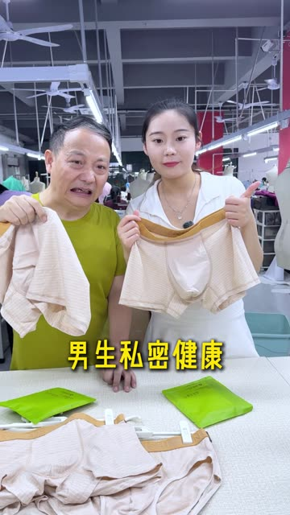
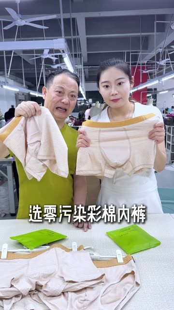
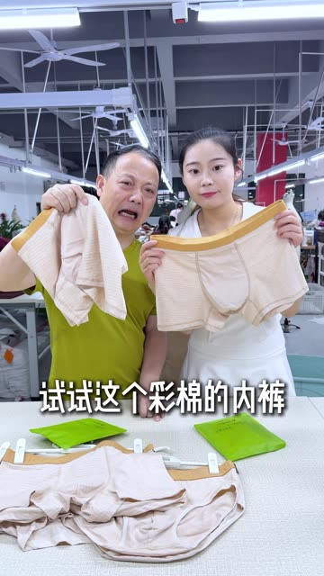
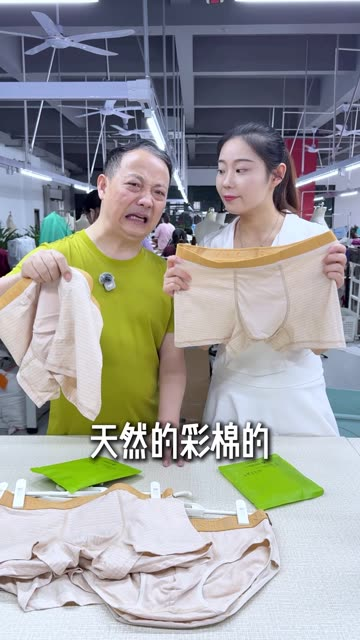
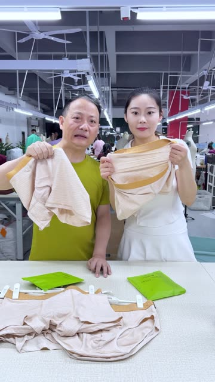
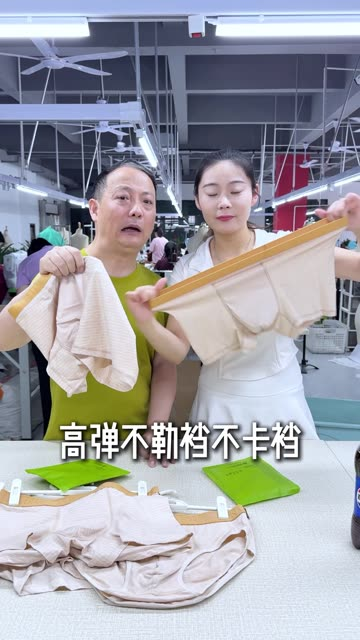